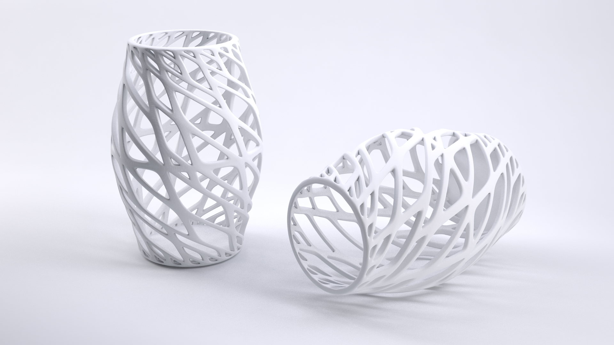
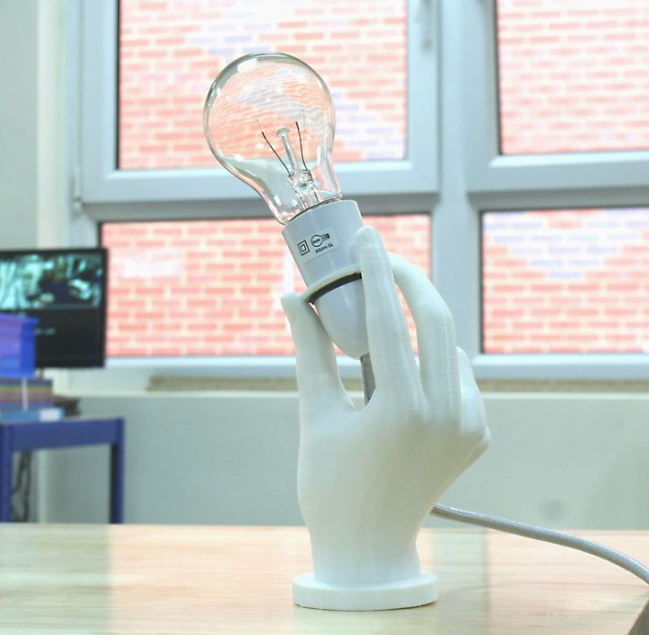
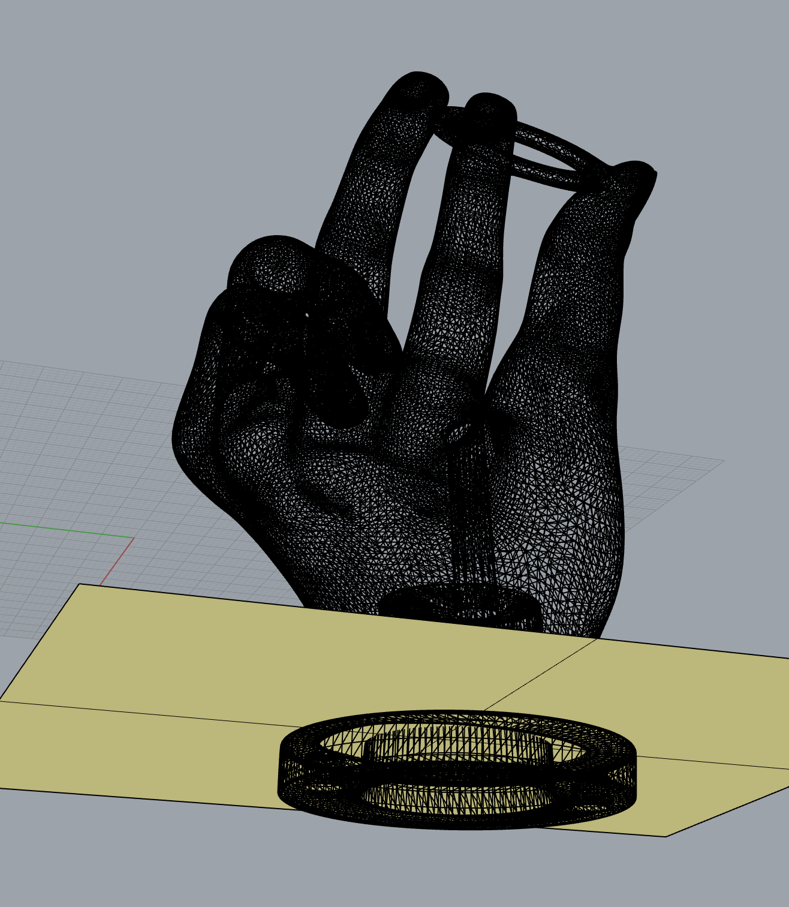
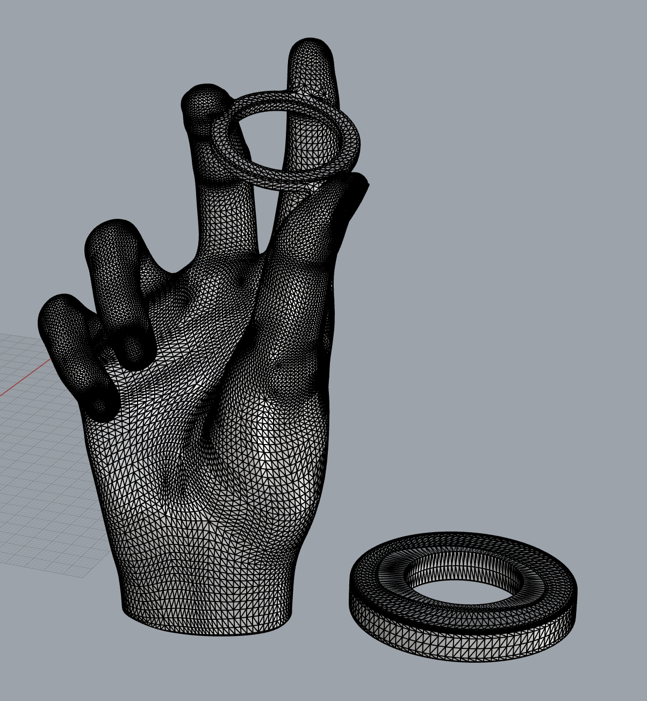
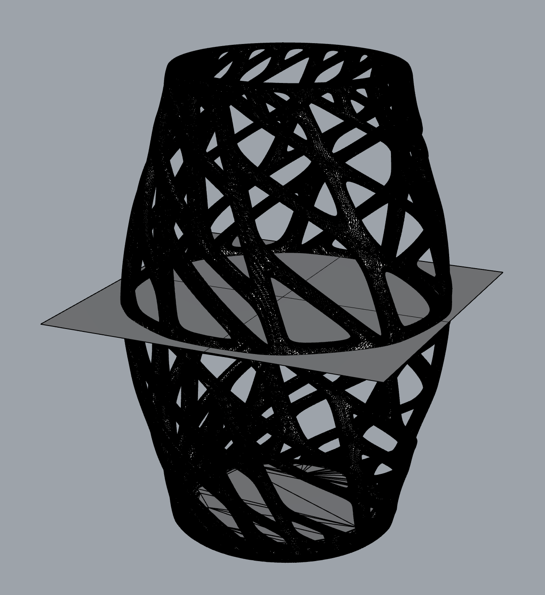
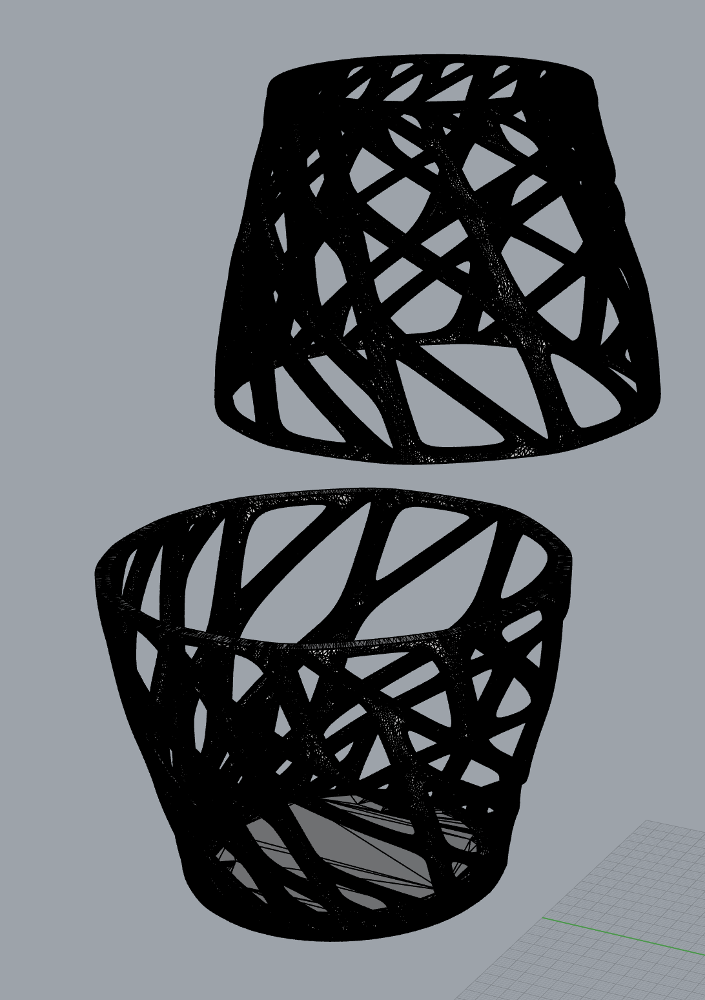
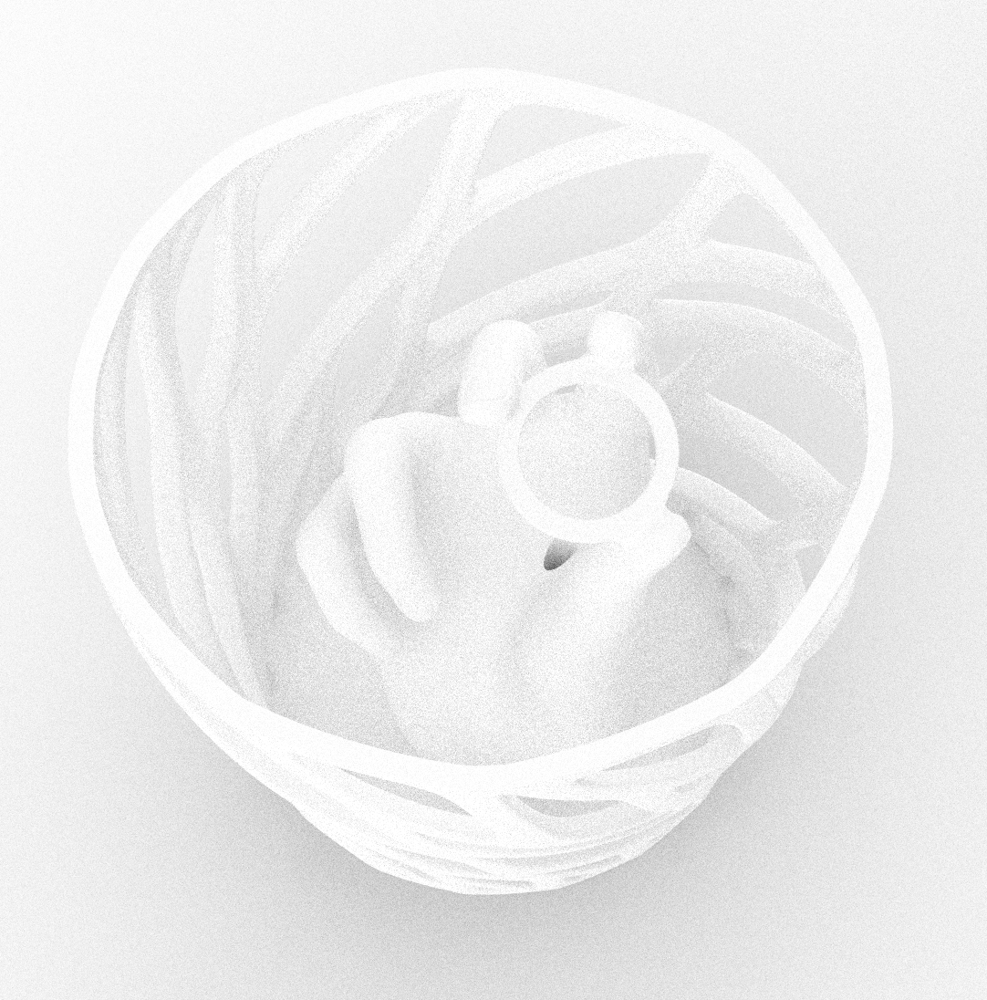
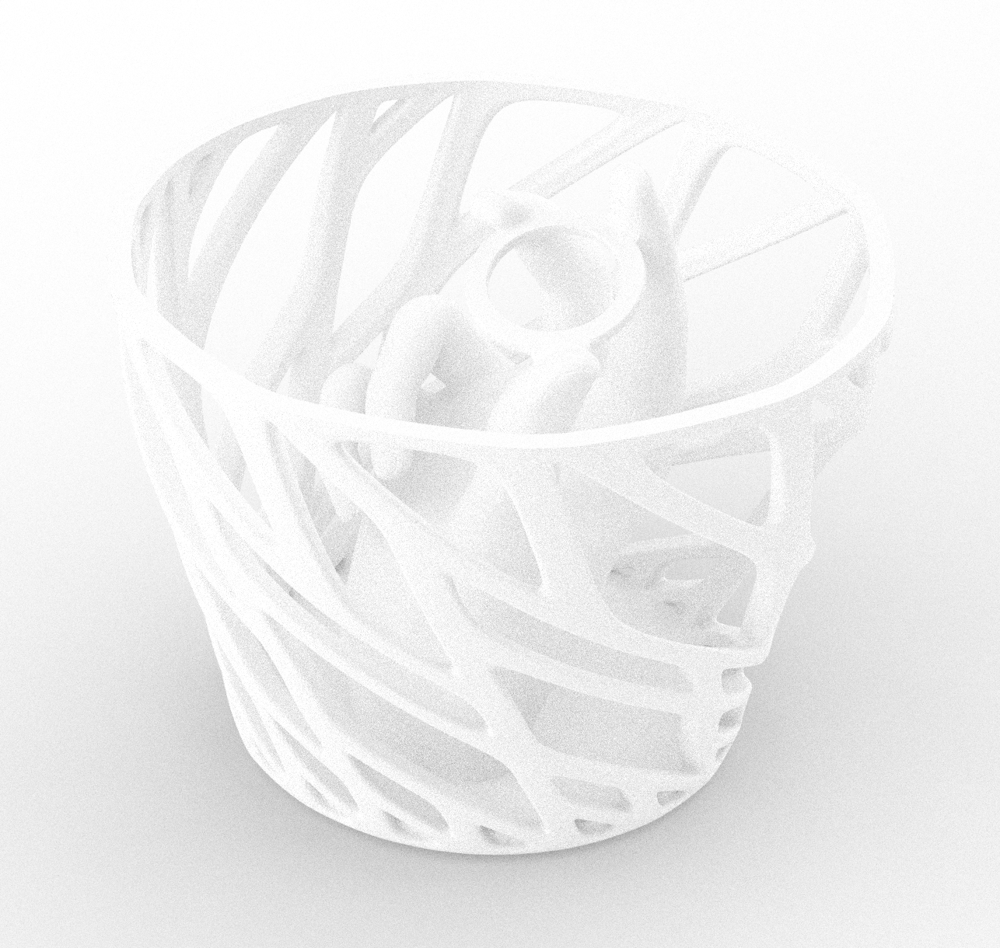

Lighting up rainy Seattle
Hey hey! Don’t mean to thrown any shade at you but this week we started making lamps!
What was my inspiration? Noelle and I took a quick little field trip to one of my favorite stores in Ballard for inspiration and we came across SO many cool 3D printed and artifacts. Here’s some really cool ones that we saw:


But what I was really inspired by was the idea of shadows in a lamp and how the design of the lamp can determine the shadows a lamp projects. And here are a couple of lamps that inspired some ideas:


(Yes, that last one really costs $399)
We also walked by one of my favorite cafe/nurseries, Root, and it had this beautiful Monstera.

I wanted to find a way to juxtapose the the symmetry of the lamps with the organic-ness of this monstera. Luckily I found this beautiful vase on Thingiverse.

I also thought that this hand holding the bulb lamp was really cool and I started wondering if I could combine the two.

So I hopped into Rhino and started working on the idea. Because I wanted the hand to sit inside the vase, I started by getting rid of the base of the hand so it would look like it’s a part of the vase.


Then, I thought of 2 variations for the vase. One with the the hand inside the entire thing and one with half transparent and half opaque. So I split the vase as well.


But I ran into some issues. I couldn’t figure out an efficient way to make it opaque besides going in gap by gap and joining it like it was a mesh hole or using “flow along surf” (thanks to Noelle for letting me know about this). And while the former approach is relatively more efficient, it still felt like too much work and given the time crunch I was on I decided to take a different approach with a half lamp and a protruding lamp so the gaps in the vase could be filled with a plant (most likely a succulent) so it would look like a hand is coming out of the ground with a bulb (like it happens in nature all the time! Lol). Here’s what the that looked like!


And here’s the full vase lamp:

Stay tuned to see how this lamp goes next week. Thanks for checking this out! Here are my source files.
Assignment 5 3DM (oops this is too big to upload here!)